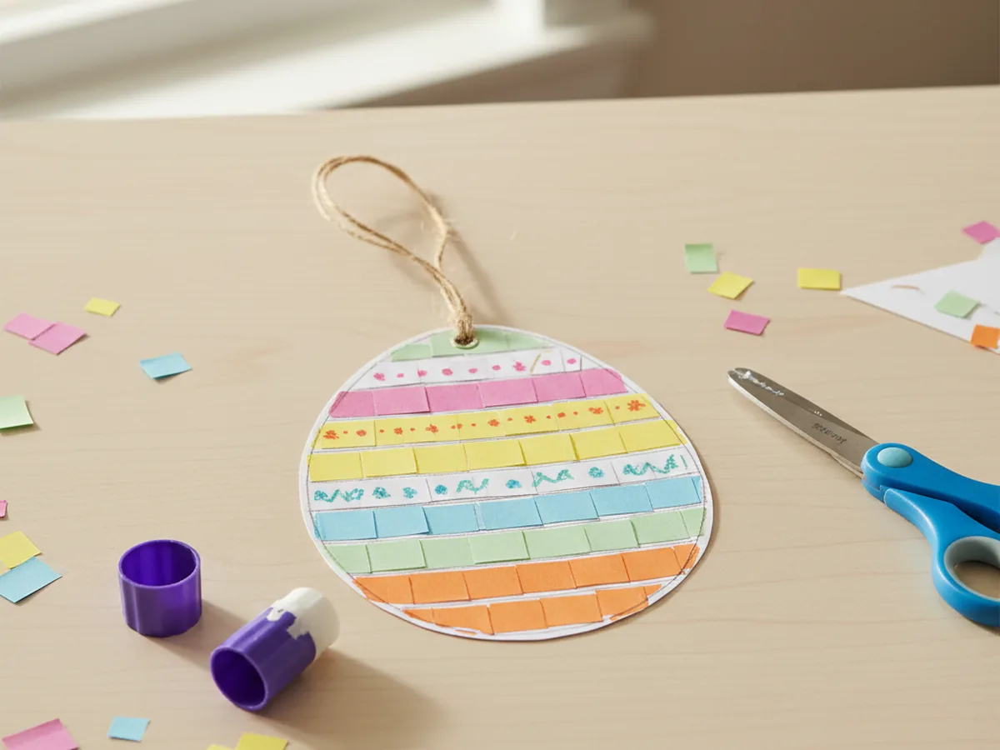
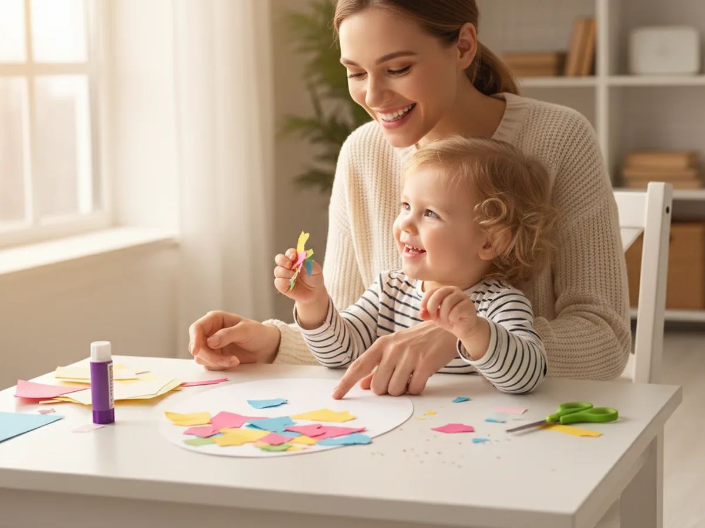
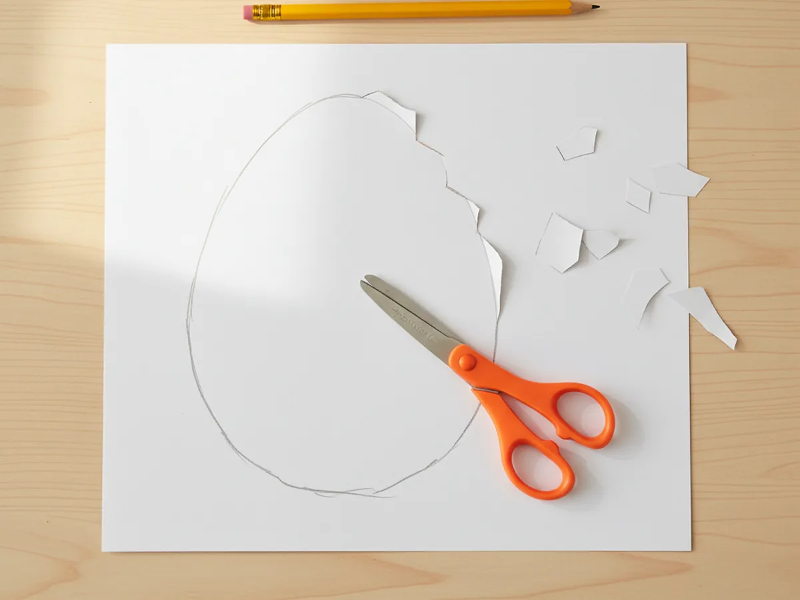
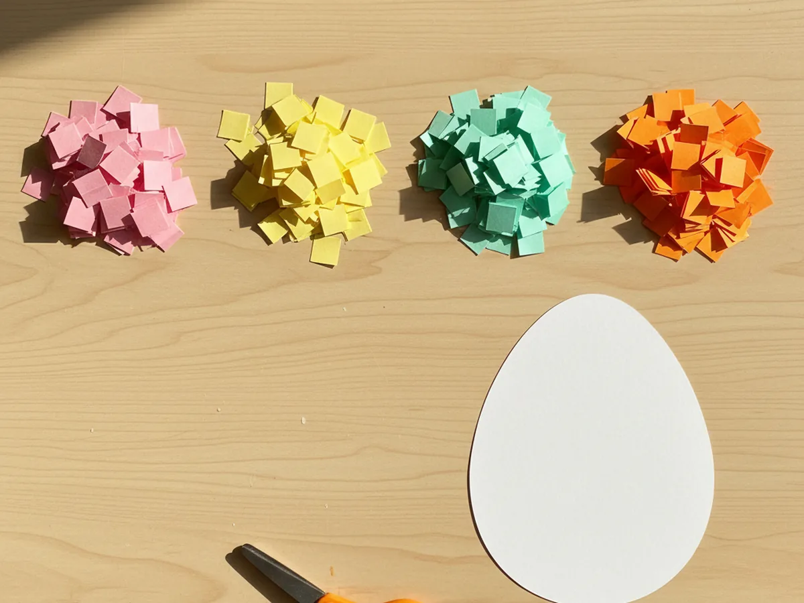
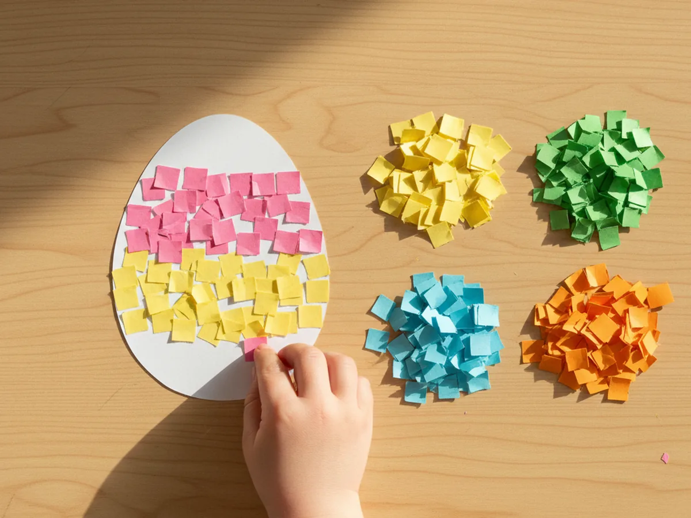
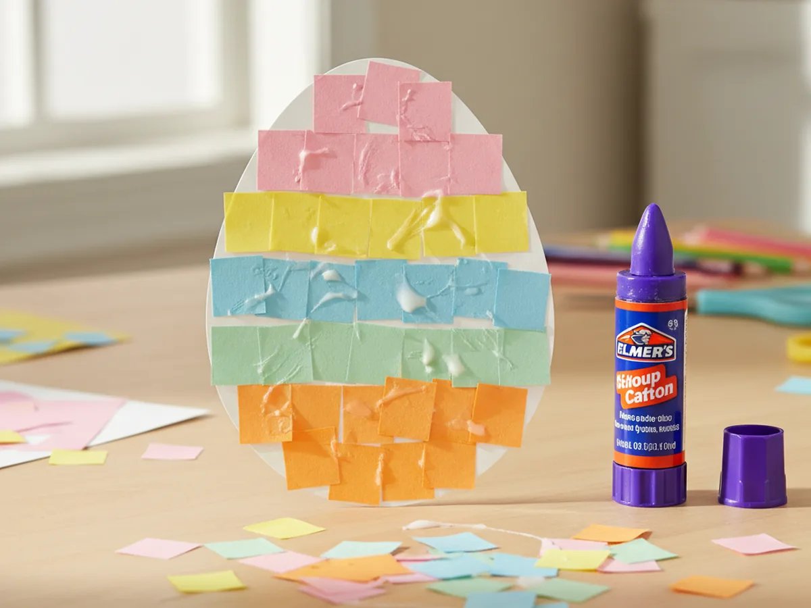
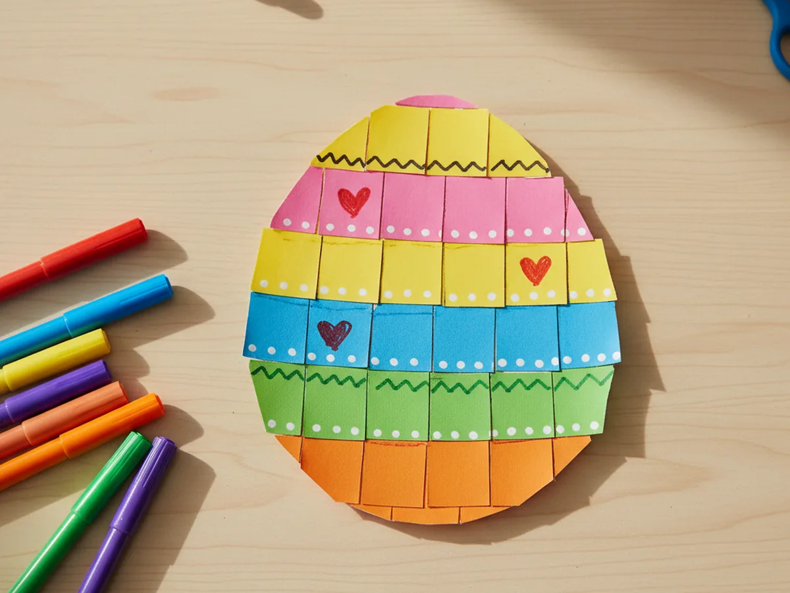
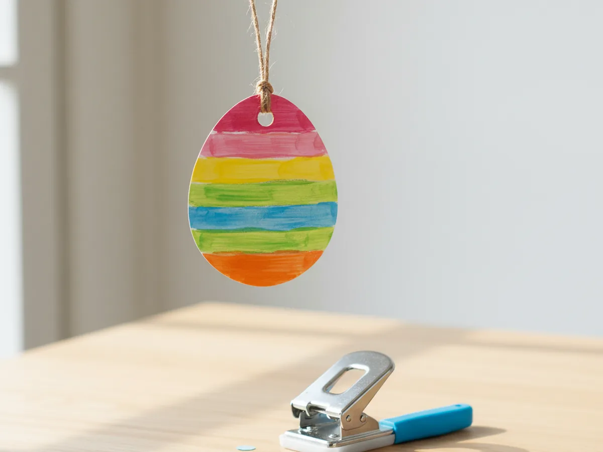

There is something so satisfying about a sweet little decorated egg appearing on the kitchen counter, the bookshelf, or the front of the fridge. This paper craft egg turns that warm, springtime feeling into a simple 25-minute project you and your child can make together with supplies you most likely already have at home. No fancy techniques, no real eggs to crack, just white cardstock, colorful paper scraps, a glue stick, and a quiet little moment of creating side by side.
Whether you are looking for an easy Easter activity, a soft spring decoration, or just a cozy afternoon craft for a slow Sunday, this paper egg craft always delivers. It looks adorable when finished, and your child will love picking the colors and patterns. 🌸
Why Kids Love This Craft
There is real magic for young children in seeing a plain white shape transform into something colorful and beautiful with just a few small pieces of paper. This paper craft egg gives your child that little burst of pride at the end, when they hold up their finished egg and realize they made it themselves.
The decorating step is the part kids talk about for days afterward. They get to choose every color, every pattern, every little flower or heart added with a marker. Because there is no right or wrong way to design an egg craft with paper, even the youngest, shyest crafters can feel like real artists from start to finish.
From a developmental angle, this craft quietly builds a lot of helpful skills. Cutting the egg outline strengthens fine motor control. Sorting paper scraps by color invites early pattern recognition. Gluing the pieces in tidy rows encourages planning and sequencing. The classic oval egg shape is also a friendly introduction to simple symmetry in nature, since both halves of the egg mirror each other. Best of all, the finished paper egg looks display-worthy enough to hang on a window, line up along a shelf, or tuck into a sweet little Easter basket. 🐣

What You'll Need
Here is everything you will need to make your paper craft egg. Lay it all out on the table before you sit down together so the activity flows smoothly from start to finish.
- Heavyweight White Cardstock, 110 lb, 25 sheets, sturdy enough to hold the colorful paper pieces without curling.
- Crayola Construction Paper, 240 sheets in 12 colors, gives you plenty of pretty pastel and bright colors to layer.
- Elmer's Disappearing Purple Glue Sticks, 30-count, washable and easy for small hands to use.
- Fiskars Training Scissors for Kids 3+, spring-action and blunt-tipped for safe, easy cutting.
- Crayola Super Tips Washable Markers, 50 count, great for adding tiny dots, hearts, and zigzag details.
- Single Hole Punch, 1/4 inch with soft grip handles, for the hanging hole at the top of the egg.
- A pencil, for drawing the egg shape before cutting.
- A piece of string, twine, or thin ribbon, for hanging the finished egg.
Step-by-Step Instructions
Follow these steps at your own pace. The craft is beginner-friendly all the way through, so there is nothing to stress about. Every step is designed to feel easy and enjoyable for both of you.
Step 1: Draw and Cut the Egg Shape
Start by drawing a large egg shape on a sheet of white cardstock with a pencil. Aim for an oval that is slightly wider at the bottom than the top, around 5 to 6 inches tall, so the finished paper craft egg feels nice and chunky. Then cut it out with kid-safe scissors. If your child is just learning to cut, you can hold the cardstock steady while they snip slowly along the line. The shape does not need to be perfectly even. A slightly wobbly egg is part of the charm of a handmade paper egg craft.

Step 2: Cut the Colorful Paper Pieces
Choose five or six colors of construction paper. Soft pastels like pink, yellow, light blue, mint green, and peach work beautifully for a spring vibe, but bright colors are just as cheerful. Cut each color into small squares or rectangles, roughly half an inch in size. Make a little pile of each color so they are easy to grab during the gluing step. Younger children love the snipping itself, and slightly uneven shapes look wonderful on the finished egg paper craft.

Step 3: Arrange the Pattern First
Before reaching for the glue, lay the colorful paper pieces on top of the egg in the pattern you want. The easiest, most beautiful look is horizontal stripes, with one color per row from top to bottom. Other fun options are diagonal stripes, polka dots, or a simple checkerboard. Letting your child plan the design first removes the stress of glue mistakes and gives them real ownership of the finished paper craft egg. Take a quick mental picture of the pattern before moving on.

Step 4: Glue Down the Paper Pieces
Now the fun begins. Working one row at a time, lift each colorful piece, swipe the back with a glue stick, and press it back onto the egg in its planned spot. Going row by row helps younger children stay organized and keeps the pattern from shifting around. The disappearing purple glue is wonderful here because you can clearly see where the glue has been applied. Continue until the entire paper craft egg is covered with cheerful colors.

Step 5: Add the Marker Details
Once the glue feels mostly dry, hand your child a few colorful washable markers. They can add tiny dots between the squares, draw little hearts in the center of certain rows, sprinkle small flowers across the egg, or trace zigzag lines along the edges of the colored stripes. These small finishing touches are what take the paper egg craft from cute to truly beautiful. Encourage your child to make it their own. Every egg ends up looking different, which is exactly the point.

Step 6: Punch a Hole and Hang It Up
To turn your finished paper craft egg into a hanging decoration, use a single hole punch to make a small hole near the top center of the egg. Cut a piece of string, twine, or thin ribbon about 8 inches long, thread it through the hole, and tie a small loop. Your child will love picking out the spot to hang it, whether that is a window, a doorknob, the kitchen cabinet, or the back of a chair at the Easter table. Step back and admire the sweet little decoration the two of you just made together. 💛

Variations to Try
Tissue Paper Mosaic Egg: Swap the construction paper squares for small pieces of colorful tissue paper. Tissue paper has a soft, slightly transparent quality that makes the egg look almost like stained glass, especially when displayed on a sunny window. This version is a wonderful option for toddlers because tissue paper tears easily by hand, no scissors required.
Polka Dot Egg with a Hole Punch: Instead of cutting squares, use a regular hole punch on different colors of construction paper to make perfect tiny circles. Glue the colorful dots all over the white egg in a confetti pattern. This is a lovely twist for ages 5 and up who enjoy a slightly more detailed project.
Garland of Mini Eggs: Make four or five smaller paper eggs using the same steps, each in a different color family, then string them together along a long piece of twine to create a sweet spring garland. Drape it across a mantel, a kitchen window, or the front of a bookshelf for a charming seasonal display.
Final Thoughts
This paper craft egg is one of those projects that asks for almost nothing yet gives back so much. It takes about 25 minutes, uses simple supplies, makes very little mess, and ends with a sweet handmade decoration your child will be proud to show off. Whether you string it up for Easter, tuck it into a basket, or save it as a keepsake of one quiet spring afternoon together, it carries that warm feeling of something made with love.
Give yourself credit for making the time to sit down and create. Those simple, slow craft afternoons are exactly the moments your child will remember long after the egg has been carefully tucked into the memory box. Happy crafting! 💕
More Crafts You'll Love
If you enjoyed making this paper egg, these other simple paper crafts are just as easy and just as fun: